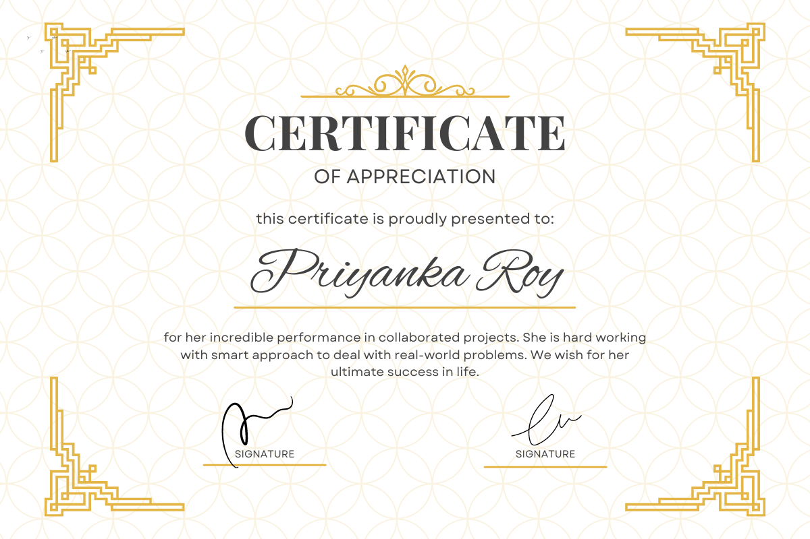

Hello, myself Priyanka Roy and currently I'm pursuing my B.Sc
(Engineering) in Computer Science and Engineering at
Hajee Mohammad Danesh Science and Technology University, Dinajpur,
Bangladesh.
This is a desktop application made as the project for my 2nd year final exam. The objective of this project is to manage any institution’s blood donation system by storing and maintaining blood donor and receiver information. It also allows users to find blood donor with whom they can contact.
This is an android based schedule management application which was made for theJava Lab Project.
This is an android based app for fast and ad-free user experience which was developed as the final project for our 5th semester database exam. Our motto behind coming up with this system was to introduce a news app that can provide users real-time access to relevant, prominent and genuine news and help them being up-to-date with the global affairs.
Exploratory Data Analysis (EDA) and applying Machine Learning Algorithms on 'test.csv' dataset using pandas, numpy, matplotlib, seaborn & scikit-learn.
Exploratory Data Analysis (EDA) and applying Machine Learning Algorithms on the 'skoda.csv' dataset using pandas, numpy, matplotlib, seaborn & scikit-learn.
This is a Heart Disease Data Set, collected from the UCI Machine Learning Repository. The complete collection consists of four individual databases collected from four different institutions located in Cleveland, Hungary, Switzerland, and the VA Long Beach. This database contains 76 attributes, but all published experiments refer to using a subset of 14 of them. In particular, the Cleveland database is the only one that has been used by ML researchers to this date. The "goal" field refers to the presence of heart disease in the patient.
